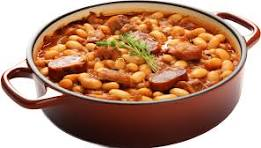
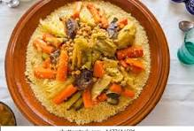
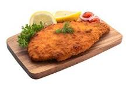

Site de recettes
Cassoulet
Le cassoulet est une specialité régionale du Languedoc, à base de haricots
secs , généralement blancs, et de viande.
À son origine, il etait à base de fèves.
Le cassoulet tient son nom de la cassole en terre cuite émaillée dite
caçòlà en occitan et fabriquée à Issel.
Couscous
Le couscous est d'une part une semoule de blé dur preparée à l'huile d'olive
(un des aliments de base traditionnel de la cuisie des pays du Maghreb)
et d'autre part, une specialité culinaire issue de la cuisine berbère, à
base de couscous,
de legumes, d'épices, d'huile et de viande
(rouge ou devolaille) ou de poisson.
Escalope milanaise
L'escalope à la milanaise , ou escalope milanaise est une escalope panée
de veau, traditionnellement prise dans le faux-filllet.
Histoiriquement, on la cuit avec du beurre.
Elle est generalement servie avec salade oufrites, accompagnée de sauce mayonnaise.
On peut y rajouter un filet de jus de citron.
En Italie, ce metsne se sert pas avec des pâtes.